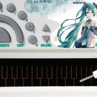

|
ポケミク (大人の科学 歌うキーボード) Web MIDI API test
|

|
||||||||
|
|
|||||||||
| (下へ行くほど古いデータです) | (入力された順) | (演奏用) |
ポケミクキーボードからの入力を記録します。
「4F#＋ピッチベンド」形式のデータを、押されたキーの音名に補正します。
リボンスライド時は「最初に押された場所の音名＋ピッチベンド」にします。
(現バージョンでは記録時の補正はしますが、再生時の補正はしていません。
つまり光るキーがずれる時があります。これはバグですので近い将来なおします。
ポケミク本体側のキャリブレーションで改善する可能性もあります。)
補正モード(しない/する/ベンド中の音も補正/ピッチベンドセンシティビティも補正)
等を変更出来るようにします。
録音・再生と SMF ファイルのダウンロードを出来るようにします。
ソース http://HatsuneMiku.github.io/pocket39/
既知の問題
現バージョンでは ポケミク ( NSX-39 ) 以外の MIDI 音源で再生すると音がずれます。
(これはピッチベンドセンシティビティの補正をまだ行っていないためです。)
休符(無音期間)が正しくピアノロール表示されていない。
まだその他バグと未実装の機能あり。